Un kilogramo de uranio-235 que se fisiona por completo libera tanta energía como unas 3 000 toneladas de carbón. La razón no es química: está en el núcleo, donde las fuerzas son un millón de veces más intensas que las que unen a los átomos entre sí.
Temas que exploraremos:
Estructura de la materia, fuerzas y defecto de masa
Fusión: el Sol y la búsqueda de una estrella en la Tierra
Radiactividad, isótopos, vida media y fechado con carbono
Fisión, reacción en cadena y reactores
Medicina nuclear: la tomografía por emisión de positrones
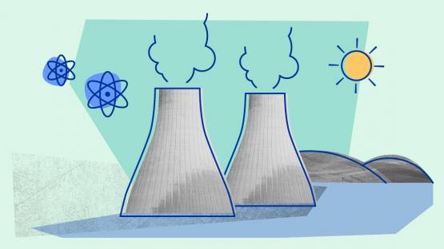
Pregunta guía
Si la masa se puede convertir en energía, ¿de dónde sale la energía de una central nuclear, qué la diferencia de una de carbón y por qué ambas hierven agua para mover una turbina?
Hoja de ruta: del núcleo a la central
La energía nuclear se entiende con una sola idea: la masa también es energía
1896
Becquerel Descubre la radiactividad en sales de uranio
1905
Einstein \(E = mc^2\): masa y energía se pueden convertir
1932
Chadwick Descubre el neutrón: el núcleo está completo
1938
Hahn, Strassmann, Meitner, Frisch Fisión del uranio
1942
Fermi Primera reacción en cadena controlada
1954
Obninsk Primera central que alimenta una red eléctrica
¿Cuánta energía hay en un kilogramo?
Energía de 1 kg:
En kWh:
Equivale a de carbón
Mantendría una bombilla LED de 10 W encendida
Escala logarítmica: cada marca es 10 veces mayor. Combustión: valores típicos (poder calorífico inferior). Fisión: 200 MeV por núcleo de ²³⁵U que se fisiona. Fusión: 17,6 MeV por reacción D–T. «Sol»: 26,7 MeV por cada 4 protones convertidos en un núcleo de helio. «mc²»: aniquilación completa de la masa, el límite teórico.
Parte I · La masa es energía
Materia, fuerzas, defecto de masa, curva de energía de enlace. Calculadora de energía liberada y explorador de la curva.
Parte II · Fusión y radiactividad
El Sol, la barrera de Coulomb, isótopos, vida media y datación con carbono 14. Simuladores de decaimiento y de datación.
Parte III · Fisión y aplicaciones
Reacción en cadena, masa crítica, reactores, medicina nuclear (PET) y el reto de la fusión controlada (ITER).
1. Estructura de la materia y tabla periódica
Cada nivel de la materia se explica con las partes del nivel anterior… hasta que se acaban las partes
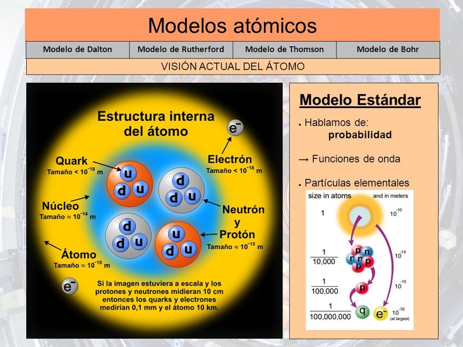
Si los protones y neutrones midieran 10 cm, los quarks y electrones medirían 0,1 mm y el átomo, 10 km.
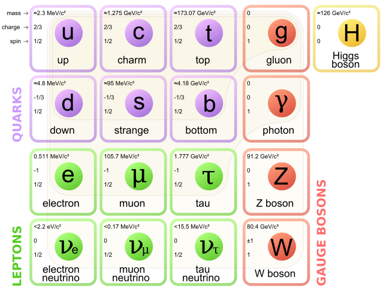
El Modelo Estándar: 6 quarks, 6 leptones y los bosones que median las interacciones.
De la tabla periódica a los quarks
La tabla periódica ordena los átomos por el número de protones \(Z\) del núcleo. Ese número decide la carga del núcleo, cuántos electrones tiene el átomo neutro y, por lo tanto, toda la química. Un protón y un neutrón no son elementales: el protón está formado por dos quarks up y uno down (\(uud\)); el neutrón, por uno up y dos down (\(udd\)).
Los tres quarks de valencia suman apenas ≈ 9 MeV/\(c^2\), cerca del 1 % de la masa del protón (938 MeV/\(c^2\)). El resto es energía: la de los gluones y el movimiento de los quarks confinados. La masa de la materia ordinaria es, en su mayor parte, energía de enlace. Esa es la puerta de entrada al tema de hoy.
Un zoom de potencias de diez
Lo más cercano:
Interacción dominante a esta escala:
Comparado con una persona (1,7 m):
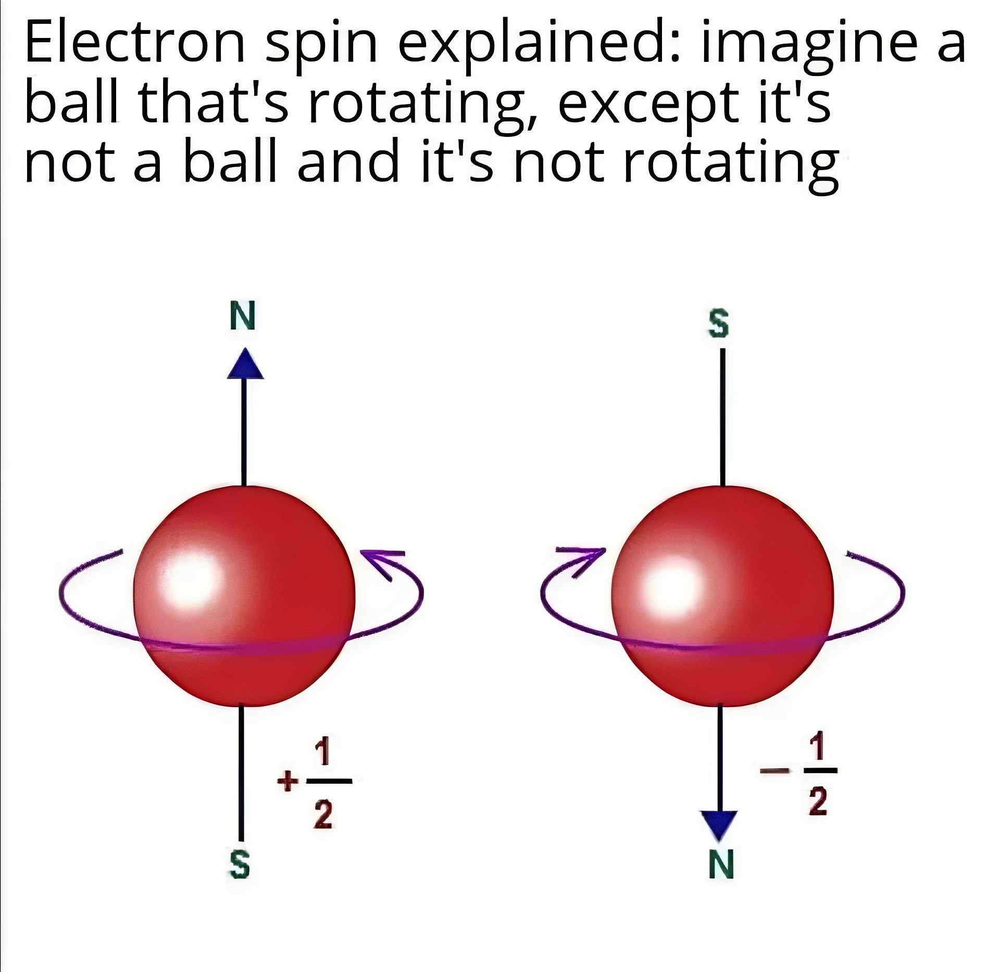
Cada escala tiene su propia física: química, física atómica, nuclear y de partículas.
El video de la diapositiva original: por qué la imagen del átomo como sistema solar es sólo un punto de partida.
2. Las cuatro interacciones fundamentales
Todo lo que ocurre en la naturaleza, del rayo a la fusión estelar, se reduce a estas cuatro
Interacción
Teoría
Mediadores
Fuerza relativa (gravedad = 1)
Dependencia con la distancia
Alcance
Fuerte
Cromodinámica cuántica (QCD)
gluones
10³⁸
residual entre nucleones: \(\sim e^{-r/r_0}/r\)
≈ 10⁻¹⁵ m
Electromagnética
Electrodinámica cuántica (QED)
fotones
10³⁶
\(1/r^2\)
infinito
Débil
Teoría electrodébil
bosones \(W^\pm\) y \(Z\)
10²⁵
\(\sim e^{-mr}/r\)
≈ 10⁻¹⁸ m
Gravitatoria
Gravedad cuántica (no establecida)
gravitones (hipotéticos)
1
\(1/r^2\)
infinito
Fuente de la tabla: la de la diapositiva original (tomada de Wikipedia, «Interacciones fundamentales»). Las intensidades relativas dependen de la distancia y de cómo se definan; son órdenes de magnitud.
Dos protones frente a frente
Repulsión eléctrica
Atracción gravitatoria
Energía potencial eléctrica:
Cociente eléctrica/gravitatoria:
Fuerza fuerte:
Fuerza débil:
Las barras usan escala logarítmica (de 10⁻³⁶ N a 10⁴ N). Se calculan con la ley de Coulomb y la de Newton para dos protones. La fuerza fuerte no se calcula aquí: sólo se indica si la distancia está dentro de su alcance (≈ 2–3 fm).
Por qué existen los núcleos
A 1 fm los protones se repelen con unos 230 N, una fuerza enorme sobre una partícula de \(10^{-27}\) kg. Sólo la interacción fuerte, unas 100 veces mayor a esa distancia, puede mantenerlos juntos.
Alcance corto, consecuencia grande
La fuerza fuerte «se apaga» a 2–3 fm: cada nucleón sólo siente a sus vecinos más cercanos. La repulsión eléctrica, en cambio, llega a todo el núcleo. Por eso los núcleos grandes son menos estables (pregunta 1 de «Para pensar»).
La débil cambia el tipo de partícula
Es la única que convierte un neutrón en un protón (o al revés). Sin ella no habría desintegración beta, ni fusión del hidrógeno en el Sol, ni fechado con carbono 14.
3. Defecto de masa
Un núcleo pesa menos que la suma de sus partes: la masa que «falta» es la energía que lo mantiene unido
Un núcleo de helio-4 contiene dos protones y dos neutrones. Si se pesan por separado y se suman, el total es mayor que la masa del núcleo ya formado:
Con \(m_p = 1{,}0073\) u y \(m_n = 1{,}0087\) u, los cuatro nucleones libres suman 4,0319 u, pero el núcleo de helio pesa 4,0015 u. La diferencia, \(\Delta m \approx 0{,}0304\) u, no se perdió: salió del sistema como energía (luz, energía cinética) al formarse el núcleo, de acuerdo con la equivalencia de Einstein:
¡Cuando se fusionan los cuatro nucleones se libera energía!
Es la energía de enlace \(B = \Delta m\,c^2\). Para separar el núcleo de helio en sus cuatro partes habría que devolver esos 28,3 MeV: es el trabajo necesario para vencer la interacción fuerte.
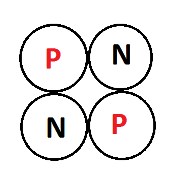
Núcleo de helio (partícula \(\alpha\)): 2 protones (P) y 2 neutrones (N).
Una analogía
Un resorte comprimido pesa un poco más que el mismo resorte relajado, y un lago helado pesa ligeramente menos que el agua líquida con su calor latente. En la química ese cambio es ~10⁻⁹ de la masa y no se mide con balanzas; en el núcleo es del orden de 1 %, y sí se mide.
Calculadora de energía de enlace
Se usan masas atómicas (átomo neutro): \(B = [Z\,m(^{1}\text{H}) + N\,m_n - M]\,c^2\). Los electrones se cancelan y se desprecia su energía de enlace atómica (~eV).
Suma de partes:
Masa del átomo:
\(\Delta m\):
\(\Delta m\) en kg:
Fracción de la masa:
Energía de enlace \(B\):
\(B/A\) (por nucleón):
Comparado con ionizar el H:
4. Fusión nuclear
Se gana energía cuando se unen núcleos ligeros
Si se fundieran dos núcleos pequeños, el núcleo resultante tendría menos masa que la suma de los dos originales. La diferencia sale como energía.
Para que ocurra, los núcleos deben chocar a muy alta rapidez y vencer la repulsión eléctrica entre sus cargas positivas (siguiente diapositiva).
A las temperaturas del Sol, cada segundo se fusionan cientos de millones de toneladas de hidrógeno en helio, y unos 4 millones de toneladas de masa se convierten en energía.
Una precisión sobre las cifras
La diapositiva original habla de 657 millones de toneladas de hidrógeno y 653 de helio. Con la luminosidad solar medida (3,83 × 10²⁶ W) los valores son ≈ 600 y ≈ 596 millones de toneladas por segundo, y 4,26 millones de toneladas convertidas en energía. Se calculan en la diapositiva 8.
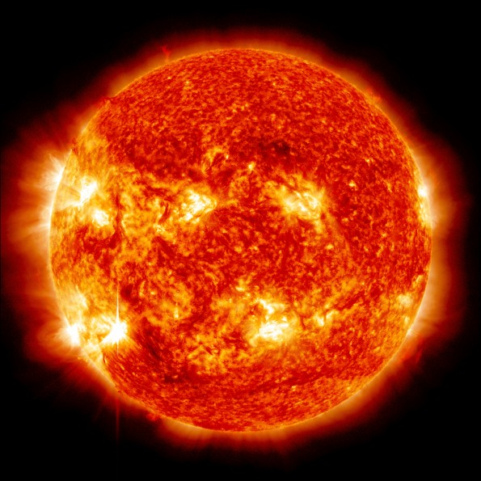
El Sol convierte unos 4 millones de toneladas de masa en energía cada segundo.
Explorador de reacciones nucleares
Masa antes:
Masa después:
\(\Delta m\):
Energía liberada \(Q\):
Por nucleón:
Por kg de combustible:
Equivale a de carbón por cada kilogramo de combustible.
Masas atómicas (AME2020). \(Q = (\sum M_{\text{antes}} - \sum M_{\text{después}})\,c^2\). Las reacciones con positrones (p–p) se calculan con masas de átomos neutros, que ya incluyen la aniquilación de los positrones con electrones. El ciclo p–p se cuenta como 4 protones → ⁴He y la energía incluye los neutrinos (≈ 0,5 MeV se escapa del Sol).
5. ¿Por qué es tan difícil fusionar núcleos?
La barrera de Coulomb, la temperatura y el túnel cuántico
Dos núcleos positivos se repelen con la fuerza eléctrica. Para que la fuerza fuerte entre en juego deben acercarse hasta \(R \approx 1{,}2\,(A_1^{1/3} + A_2^{1/3})\) fm. La energía necesaria es la barrera de Coulomb:
Para deuterio–tritio, \(V_C \approx 0{,}44\) MeV. Eso corresponde a una temperatura clásica de 5 000 millones de kelvin, pero la fusión en el Sol ocurre a 15 millones de kelvin. ¿Cómo es posible?
Cola de Maxwell: a cualquier temperatura hay unas pocas partículas muy veloces.
Efecto túnel: un núcleo con menos energía que la barrera tiene una probabilidad pequeña, pero no nula, de atravesarla.
La reacción ocurre sobre todo en una ventana estrecha de energías, el pico de Gamow, donde ambas probabilidades se compensan.
Azul: cola de Maxwell–Boltzmann \(\propto e^{-E/kT}\). Rojo: probabilidad de túnel \(\propto e^{-\sqrt{E_G/E}}\). Verde: producto de ambas (lo que realmente reacciona), normalizado a 1. \(E_G = 2\mu c^2(\pi\alpha Z_1 Z_2)^2\), con \(\mu\) la masa reducida; \(E_0 = (E_G (kT)^2/4)^{1/3}\). Se supone un factor astrofísico \(S(E)\) constante.
Por qué D–T
Tiene la barrera más baja de las reacciones útiles (\(Z_1 Z_2 = 1\)) y una resonancia que, a unos 10 keV, la hace decenas de veces más probable que D–D. Es la primera candidata para un reactor.
Por qué el Sol es lento
La reacción p–p exige que un protón se convierta en neutrón (interacción débil) durante el choque. Es tan improbable que un protón típico espera miles de millones de años: por eso el Sol dura tanto.
Por qué «sólo» los ligeros
La barrera crece con \(Z_1 Z_2\): para C + C es unas 20 veces mayor que para D–T y exige cerca de mil millones de kelvin. Las estrellas masivas lo alcanzan sólo en etapas tardías de su vida.
6. Fusión termonuclear en el Sol
Una fábrica de helio de 3,8 × 10²⁶ W que funciona desde hace 4 600 millones de años
En el núcleo solar, a unos 15 millones de kelvin, cuatro protones se transforman en un núcleo de helio-4 mediante la cadena protón–protón. La masa final es 0,7 % menor que la inicial: ese defecto de masa aparece como radiación gamma, energía cinética de las partículas y neutrinos.
Los fotones gamma de MeV no salen directamente. El interior del Sol es tan denso que cada fotón es absorbido y reemitido una y otra vez; en cada interacción pierde parte de su energía. Tras un recorrido aleatorio de decenas de miles de años o más, la energía llega a la superficie degradada a luz visible y se irradia al espacio. Desde ahí, 8,3 minutos hasta la Tierra.
Los neutrinos sí salen directo
Los neutrinos casi no interactúan con la materia y escapan del núcleo en un par de segundos. Más de 6 × 10¹⁰ atraviesan cada centímetro cuadrado de la Tierra por segundo. Detectarlos (Super-Kamiokande, Borexino) confirmó que el Sol brilla por fusión.
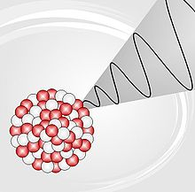
La fusión ocurre en el núcleo; la energía tarda en salir.
Sugerida: capas del Sol.
Cuentas de la luminosidad solar
Luminosidad \(L_\odot = 3{,}828\times10^{26}\) W
Masa convertida en energía: por segundo \((L/c^2)\)
Hidrógeno consumido: por segundo
Helio producido: por segundo
Energía emitida:
Masa convertida: = de la masa del Sol
Hidrógeno fusionado: de la masa del Sol
Se usa \(\varepsilon = \Delta m/m = 0{,}0071\) (de 4 ¹H → ⁴He) y una luminosidad constante. En realidad el Sol era ~30 % más tenue al formarse y su brillo crece lentamente.
Un fotón camina al azar hacia afuera
En línea recta:
Con choques (\(t \approx R^2/\ell c\)):
El dibujo no está a escala: sólo muestra la idea de la caminata aleatoria. El recorrido libre real varía de ≈ 0,1 mm en el centro a ≈ 1 cm cerca del borde de la zona radiativa; un valor efectivo de décimas de milímetro reproduce el orden de magnitud (10⁵ años) de los modelos solares.
7. La curva de energía de enlace por nucleón
Un solo gráfico explica por qué se libera energía fusionando átomos livianos y fisionando átomos pesados
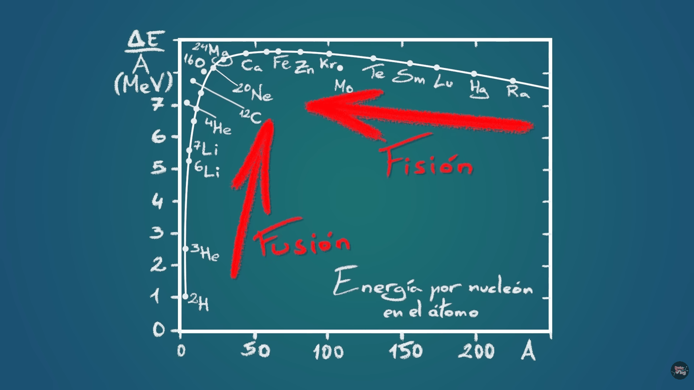
Energía de enlace por nucleón \(\Delta E/A\) frente al número másico \(A\). Fusión (núcleos ligeros) y fisión (núcleos pesados) acercan el sistema al máximo, cerca del hierro.
La energía de enlace por nucleón crece rápido desde el deuterio (1,1 MeV) hasta el helio-4 (7,1 MeV), llega a un máximo cerca del hierro-56 y el níquel-62 (≈ 8,8 MeV) y baja lentamente hasta ≈ 7,6 MeV en el uranio.
A la izquierda del máximo unir núcleos aumenta \(B/A\): los productos están más ligados, sobra energía → fusión.
A la derecha partir un núcleo en dos de tamaño intermedio también aumenta \(B/A\) → fisión.
El helio-4 destaca como un pico local: por eso es el producto natural de la fusión y de la desintegración \(\alpha\).
Una forma de recordarlo
Los núcleos «ruedan cuesta abajo» hacia el hierro. Los de la izquierda lo hacen fusionándose; los de la derecha, rompiéndose. El hierro es el fondo del valle: no hay energía nuclear que extraer de él.
Explorador: modelo de la gota líquida y datos reales
\(Z\) más estable para este \(A\):
\(B/A\) del modelo:
\(B/A\) real: —
Fisión simétrica (estimada):
Fusión de dos núcleos iguales (estimada):
Puntos: \(B/A\) calculada con masas atómicas medidas. Línea: fórmula semiempírica de masas con \(Z\) óptimo para cada \(A\). Las estimaciones de fisión y fusión salen de la fórmula (precisión de algunos MeV, poco fiable para \(A < 20\)).
La fórmula semiempírica de masas
\[ B = a_V A - a_S A^{2/3} - a_C \frac{Z(Z-1)}{A^{1/3}} - a_A\frac{(A-2Z)^2}{A} + \delta(A,Z) \]
Coeficientes usados: \(a_V = 15{,}75\), \(a_S = 17{,}8\), \(a_C = 0{,}711\), \(a_A = 23{,}7\) y \(a_P = 11{,}18\) MeV; \(\delta = \pm a_P/\sqrt{A}\) para núcleos par–par / impar–impar y 0 para \(A\) impar.
Cada término tiene un origen físico: volumen (cada nucleón se une a sus vecinos), superficie (los de afuera tienen menos vecinos), Coulomb (repulsión entre protones), asimetría (el principio de exclusión prefiere \(N \approx Z\)) y apareamiento (los pares de nucleones iguales se ligan algo más).
Contribución de cada término (por nucleón)
Verde: términos que ligan. Rojo: términos que desligan. Al crecer \(A\) el término de superficie se debilita y el de Coulomb \(\propto Z^2/A^{4/3}\) crece: la curva sube, llega al máximo y vuelve a bajar. Eso responde a «¿por qué un núcleo grande es menos estable?».
8. El núcleo atómico y la radiactividad
Un átomo puede ganar o perder electrones sin cambiar de elemento; un núcleo que cambia de protones, sí
Si un átomo gana o pierde electrones se convierte en un ion, pero sus propiedades químicas y su lugar en la tabla periódica no cambian. Un núcleo, en cambio, no puede ganar ni perder nucleones sin cambiar su estructura; y si cambia su número de protones, cambia de elemento. Esa transformación de un elemento en otro se llama transmutación.
No todas las combinaciones de protones y neutrones son estables. Las que no lo son se desintegran espontáneamente hasta llegar a una combinación estable: son los núcleos radiactivos.
El valle de estabilidad
En el mapa de abajo cada casilla es un par \((N, Z)\). Los núcleos estables forman una banda estrecha: para \(A\) pequeño \(N \approx Z\); para \(A\) grande hace falta un exceso de neutrones (más pegamento fuerte por protón) para compensar la repulsión eléctrica.
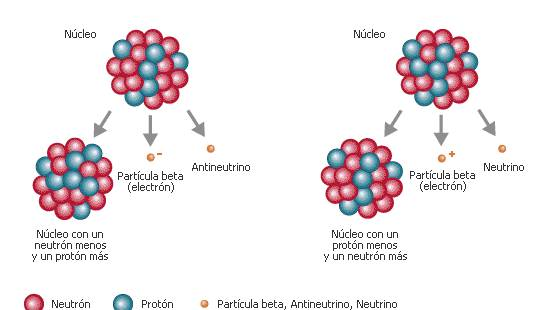
Dos formas de la desintegración beta: exceso de neutrones (izquierda) y exceso de protones (derecha).
Mapa de núclidos
Fondo (predicción de la fórmula de masas, sólo núclidos con \(Q < 14\) MeV, aproximadamente la zona conocida): azul = decaería \(\beta^-\) (exceso de neutrones); rojo = \(\beta^+\) o captura electrónica (exceso de protones); verde = estable frente a la desintegración beta. Los puntos con borde son núclidos reales con su modo medido. Haz clic en el mapa: en cualquier casilla verás la predicción del modelo (± 1–2 MeV; no sustituye a los datos de una carta de núclidos real).
Sugerida: carta de núclidos real (IAEA Live Chart: www-nds.iaea.org/relnsd/vcharthtml/VChartHTML.html).
9. Tipos de desintegración y sus ecuaciones
Un núcleo inestable decae emitiendo partículas hasta llegar a uno más estable
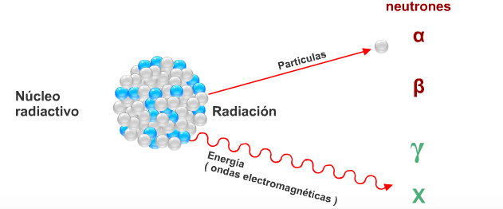
Un núcleo radiactivo emite partículas (\(\alpha\), \(\beta\)) y radiación electromagnética (\(\gamma\)).
Radiactividad: proceso de la física nuclear en el que un núcleo inestable (radiactivo) decae y emite diferentes tipos de partículas. En toda desintegración se conservan el número de nucleones \(A\), la carga eléctrica y la energía.
Los electrones de la desintegración beta salen con un espectro continuo de energías, lo que parecía violar la conservación de la energía. Pauli propuso en 1930 una partícula neutra e invisible que se llevaba el resto; el neutrino se detectó en 1956 (Cowan y Reines).
El electrón sale del núcleo
No es un electrón orbital: se crea cuando un neutrón se convierte en protón por la interacción débil. Por eso el átomo hijo queda con un electrón de menos en el núcleo y una carga nuclear de más.
Alfa y el túnel cuántico
La partícula \(\alpha\) atraviesa por efecto túnel la misma barrera de Coulomb de la fusión, pero de adentro hacia afuera. El \(^{212}\)Po (8,95 MeV) vive 0,3 µs; el \(^{238}\)U (4,27 MeV), 4 500 millones de años: ¡24 órdenes de magnitud por un factor 2 en energía!
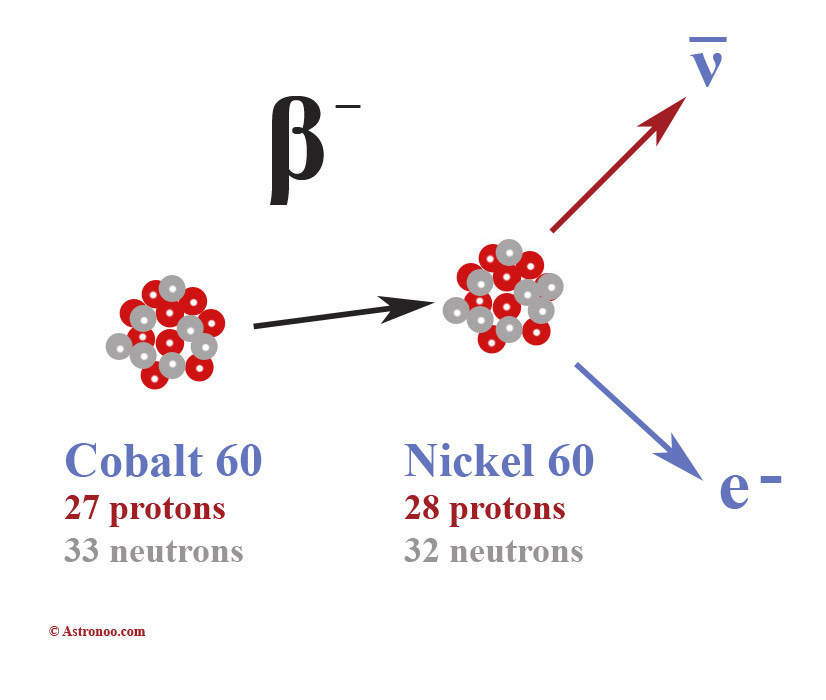
\(^{60}\)Co → \(^{60}\)Ni: un neutrón (33 → 32) pasó a protón (27 → 28).
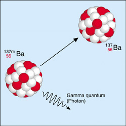
\(^{137m}\)Ba emite un fotón \(\gamma\) y baja a su estado fundamental.
Calculadora de núcleos hijos
Ejercicio:
La calculadora aplica las reglas de conservación de \(A\) y \(Z\); no verifica que la desintegración sea energéticamente posible para ese núcleo en la naturaleza.
10. ¿Cuánto penetra cada radiación?
Lo que importa para protegerse no es la energía sola, sino cómo interactúa cada partícula con la materia
Alfa
Carga +2 y masa de 4 u: ioniza intensamente y se frena en micrómetros. Una hoja de papel o la capa muerta de la piel la detienen. Peligrosa sólo si el emisor se inhala o se ingiere.
Beta
Electrones o positrones ligeros: atraviesan papel y se detienen en algunos milímetros de aluminio o plástico. Con material de número atómico alto producen rayos X de frenado, por eso se blinda con plásticos.
Gamma y X
Sin carga ni masa: no tienen alcance definido, sino atenuación exponencial. Cada capa elimina una fracción fija. Para blindarla se usa material denso: plomo, hormigón, acero.
Simulador de blindaje
Alfa (5 MeV)
Beta
Gamma
Espesor:
Capa hemirreductora del gamma:
Espesor para reducir el gamma a 1 %:
Porcentaje de radiación que atraviesa el blindaje. Modelo simplificado. Alfa: alcance ≈ 5 mg/cm² (corte brusco). Beta: atenuación exponencial con \(\mu \approx 17\,E_{\max}^{-1,14}\) cm²/g. Gamma: coeficientes de atenuación másica de NIST para haz estrecho (Pb, Al, agua y hormigón ordinario); en la práctica la radiación dispersada obliga a espesores algo mayores («factor de acumulación»).
Es la misma ley matemática que gobierna el decaimiento radiactivo en el tiempo (diapositiva 15): aquí la «variable» es el espesor, allá es el tiempo. Cada capa hemirreductora reduce la intensidad a la mitad; con 7 capas queda menos del 1 %.
Sugerida: diagrama clásico de penetración.
11. Isótopos
Mismo elemento, distinta masa: el número de neutrones puede variar, el de protones no
Isótopos son átomos que tienen la misma cantidad de protones (\(Z\)) pero distinta cantidad de neutrones. Como los electrones y la carga nuclear son los mismos, tienen las mismas propiedades químicas; pero la masa es diferente y por eso difieren algunas propiedades físicas: densidad, puntos de fusión y ebullición, velocidad de difusión y, sobre todo, la estabilidad del núcleo.
Un caso extremo: el agua pesada
El deuterio tiene el doble de masa que el hidrógeno ordinario. El agua pesada (\(\text{D}_2\text{O}\)) congela a 3,8 °C, hierve a 101,4 °C y es 11 % más densa. Los peces no sobreviven en agua pesada pura: las reacciones bioquímicas son sensibles a la masa. Por su baja absorción de neutrones se usa como moderador en reactores CANDU.
\[ {}^{A}_{Z}X \qquad\quad A = Z + N \ (\text{número másico}) \qquad Z = \text{número atómico} \]
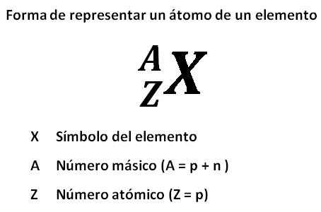
Forma de representar un átomo: \(A\) arriba (protones + neutrones), \(Z\) abajo (protones).
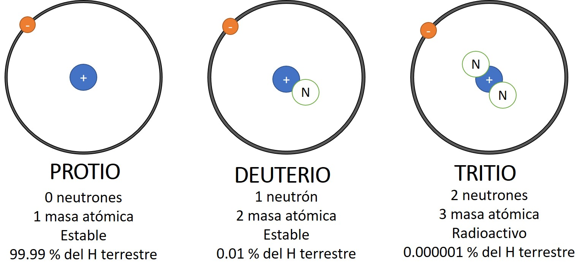
Isótopos del hidrógeno: protio (\(^1\)H), deuterio (\(^2\)H) y tritio (\(^3\)H).
Una cifra para corregir en la imagen
La imagen indica que el tritio es el 0,000001 % del hidrógeno terrestre. La abundancia natural del tritio es mucho menor: del orden de \(10^{-16}\) % (un átomo de \(^3\)H por cada \(10^{18}\) de \(^1\)H). El tritio es radiactivo (\(T_{1/2} = 12{,}3\) años) y se forma continuamente en la alta atmósfera por rayos cósmicos. El deuterio es 0,0115 %, no 0,01 %.
La masa atómica de la tabla periódica es un promedio
Masa atómica promedio:
Valor de la tabla periódica:
Promedio ponderado \(\bar{m} = \sum_i f_i\,m_i\). Ninguno de los átomos de cloro pesa 35,45 u: son de 34,97 u o de 36,97 u. La masa promedio sólo tiene sentido para una muestra con la mezcla natural. Con elementos de dos isótopos puedes mover la abundancia y ver cómo se mueve la masa atómica.
12. Isótopos del carbono y la unidad de masa atómica
Un elemento, tres isótopos naturales, uno de ellos radiactivo
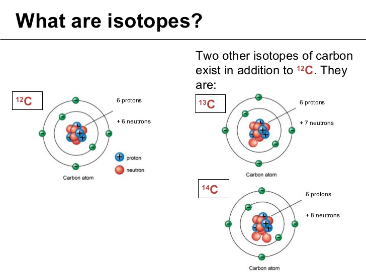
\(^{12}\)C (6 neutrones), \(^{13}\)C (7) y \(^{14}\)C (8): todos con 6 protones.
Las masas atómicas de la tabla periódica están en unidades de masa atómica (u) y son el promedio de las masas de los isótopos del elemento, ponderado por su abundancia. Esa unidad se define a partir del carbono-12:
El carbono-14 es radiactivo (inestable): tiene 8 neutrones y 6 protones y decae \(\beta^-\) a nitrógeno-14. Se usa en arqueología para fechar restos orgánicos.
Patrón: con \(N < Z\) (exceso de protones) los isótopos decaen \(\beta^+\); con \(N > Z\) (exceso de neutrones), \(\beta^-\). Sólo los de \(N \approx Z\) son estables. La abundancia del \(^{14}\)C es de una parte en \(10^{12}\) del carbono total.
Convertidor masa–energía
En u:
En kg:
En MeV/c²:
Energía en julios:
Si la entrada es una energía en julios, se convierte a la masa que le corresponde. Ejemplos: electrón = 0,511 MeV/c²; protón = 938,27 MeV/c²; 1 g de masa = \(9\times10^{13}\) J.
Por qué «u» y no «kg»
Las masas atómicas son del orden de \(10^{-26}\) kg: incómodas. Al medirlas en u, el protón y el neutrón son casi 1, el carbono-12 es exactamente 12 y el número másico \(A\) coincide casi con la masa. La diferencia entre \(A\) y la masa verdadera (por ejemplo, 4 contra 4,0026 en el helio) combina dos efectos que casi se cancelan: los nucleones libres pesan algo más de 1 u cada uno, y el defecto de masa de la diapositiva 5 resta una parte.
13. Tiempo de vida media
No se puede saber cuándo se desintegrará un átomo concreto, pero sí cuántos lo harán en un tiempo dado
La vida media (o semivida) \(T_{1/2}\) es el tiempo que tarda en decaer la mitad de una cantidad original de un isótopo radiactivo. Cada isótopo tiene la suya, que no cambia con la temperatura, la presión ni la química: el radio-226 tiene unos 1 600 años; el cobalto-60, 5,27 años; el yodo-131, 8 días; el tecnecio-99m, 6 horas.
\(N(t)\): núcleos que quedan transcurrido un tiempo \(t\); \(N_0\): cantidad inicial; \(\lambda\): constante de desintegración, característica de cada sustancia; \(\tau\): vida media «promedio» (1,44 veces la semivida). La actividad \(A = \lambda N\) (desintegraciones por segundo, becquerel) decae con la misma ley.
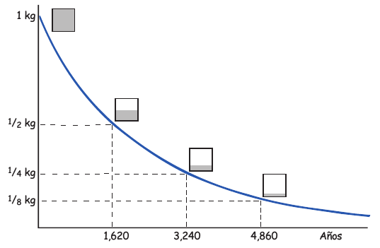
Cada vida media la cantidad se reduce a la mitad (ejemplo con radio-226, ~1 600 años).
Simulador de decaimiento: cada núcleo decide por su cuenta
Cuadrícula: cada cuadro es un núcleo; los que ya decayeron se apagan. Gráfica: puntos = esta muestra; línea = \(N_0 2^{-t/T_{1/2}}\); líneas punteadas verticales = múltiplos de \(T_{1/2}\). Con 25 núcleos la curva es irregular y cambia en cada muestra; con 2 500 sigue casi exactamente la exponencial. La ley es estadística: vale para muchos núcleos, no para uno.
Una analogía con dados
Imagina que cada núcleo lanza un dado cada segundo y «decae» si sale 1. No hay forma de saber cuándo caerá un dado concreto, pero con 600 dados se sabe que en un lanzamiento caen unos 100. Y los dados no tienen memoria: un núcleo que lleva mil millones de años «sin decaer» tiene la misma probabilidad de decaer mañana que uno recién formado.
Un error frecuente
Después de dos vidas medias no ha decaído todo: queda la cuarta parte (25 %). Después de 10 vidas medias queda el 0,1 %; después de 20, una millonésima. Una sustancia nunca «se acaba» matemáticamente, aunque llega un punto en que ya no queda ni un solo núcleo.
14. Rayos cósmicos y carbono 14: un equilibrio dinámico
El carbono 14 se produce en el cielo y desaparece en el suelo, y eso lo mantiene constante en los seres vivos
Los rayos cósmicos bombardean continuamente la atmósfera y provocan transmutaciones de muchos átomos en la alta atmósfera: «rocían» protones y neutrones en el ambiente. Los neutrones de baja energía chocan con el nitrógeno-14, el gas más abundante del aire, y lo transforman en carbono-14:
El carbono-14 se une al oxígeno y forma \(^{14}\text{CO}_2\), que se mezcla con el \(^{12}\text{CO}_2\) del aire. Las plantas lo absorben en la fotosíntesis, los herbívoros comen plantas y los carnívoros comen herbívoros: todos los seres vivos contienen un poco de carbono-14.
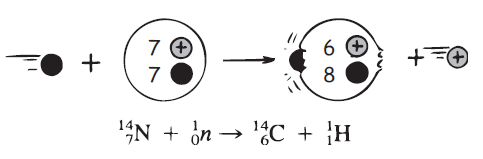
Producción de \(^{14}\)C en la alta atmósfera.
Equilibrio radiactivo
Mientras el organismo vive, el carbono-14 que se desintegra se repone con carbono-14 fresco de la atmósfera. Se llega así a un equilibrio: en todo ser vivo hay aproximadamente un átomo de carbono-14 por cada billón (\(10^{12}\)) de átomos de carbono-12. Al morir, el intercambio cesa y el carbono-14 sólo decae, con una vida media de unos 5 730 años.
Producción y decaimiento: ¿por qué hay un equilibrio?
Equilibrio \(N_{eq} = Q/\lambda\): del valor de referencia
Constante de tiempo \(\tau\):
Tras 5 \(\tau\) llega al 99,3 %:
Efecto en la edad calculada:
Ecuación: \(dN/dt = Q - \lambda N\). Es la misma idea de una bañera con el grifo abierto y el desagüe abierto: el nivel sube hasta que lo que entra iguala lo que sale. Línea azul: \(^{14}\)C atmosférico relativo. Si la producción varía (actividad solar, campo magnético terrestre) el nivel cambia, y una datación que supone «nivel constante» se equivoca. Por eso existen curvas de calibración (dendrocronología, corales, sedimentos).
¿Cuánto \(^{14}\)C hay en la Tierra?
Neutrones cósmicos capturados: ≈ 2 átomos de \(^{14}\)C por cm² y por segundo (valor típico)
Producción total (superficie de 5,1 × 10¹⁸ cm²): átomos/s
Equilibrio \(N = Q/\lambda\): átomos
Masa de \(^{14}\)C:
Carbono intercambiable con \(^{14}\)C/\(^{12}\)C = \(1{,}2\times10^{-12}\):
El resultado (≈ 60 toneladas de \(^{14}\)C entre ≈ 4 × 10⁴ Gt de carbono en atmósfera, biosfera y océanos) concuerda con los inventarios medidos. Sirve para comprobar que la razón de una parte en \(10^{12}\), y no una en \(10^{11}\), es la consistente con la producción cósmica.
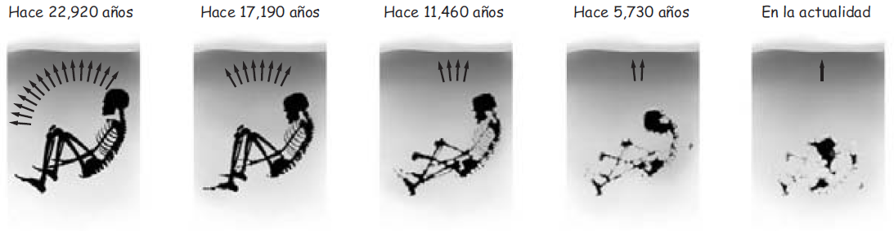
Un organismo que muere deja de renovar su carbono-14: queda ½, ¼, ⅛, … cada 5 730 años.
15. Fechado con carbono 14
Un reloj atómico para todo lo que alguna vez estuvo vivo, hasta unos 50 000 años
Se mide qué fracción \(f\) del carbono-14 inicial queda en la muestra (compárala con la razón \(^{14}\)C/\(^{12}\)C de un ser vivo) y se invierte la ley de decaimiento:
\[ f = \frac{N}{N_0} = e^{-t/\tau} \quad\Rightarrow\quad t = -\tau\,\ln f = \frac{T_{1/2}}{\ln 2}\,\ln\frac{1}{f} \]
Sirve para huesos, madera, carbón vegetal, textiles, semillas, conchas y papel. No sirve para rocas, ni para lo que tenga más de ~50 000 años: queda menos del 0,2 % del isótopo original y cualquier contaminación mínima domina la medida.
Dos convenios importantes
La «edad radiocarbónica» convencional se calcula con la vida media de Libby (5 568 años) y se expresa «antes del presente» (BP, 1950). Para obtener años de calendario se usa una curva de calibración (IntCal20), porque la producción de \(^{14}\)C no ha sido constante. Con 5 730 años se obtiene la edad «física» sin calibrar.
Calculadora de edad
Edad:
Número de vidas medias:
Incertidumbre de la edad:
\(\sigma_t = \tau\,\sigma_f/f\): la incertidumbre en años crece sólo con el error relativo de la medida. Con 1 % de error, cada muestra tiene ±83 años, venga de donde venga. Los ejemplos usan edades conocidas por otros métodos y ayudan a ubicar los números.
Otros isótopos fechan lo que el carbono no puede: el uranio-238 (\(T_{1/2} = 4{,}47\times10^9\) años) fecha rocas y la edad de la Tierra (≈ 4 540 millones de años); el potasio-40 (1 250 millones de años), rocas volcánicas; el uranio-235 y el torio-232, minerales. Cada reloj sirve en una escala de tiempo distinta, y los isótopos se escogen según la edad esperada.
16. Fisión nuclear
Un núcleo muy grande, un neutrón que llega y un núcleo que se parte en dos
En un núcleo grande la interacción fuerte (de corto alcance) se ve superada por la repulsión eléctrica (de largo alcance): los núcleos pesados están «a punto» de romperse. La absorción de un neutrón suministra la energía suficiente para deformarlo y separarlo en dos fragmentos.
Según el modelo de la gota líquida de Bohr y Wheeler, el núcleo es una gota cargada. La tensión superficial la mantiene redonda y la repulsión eléctrica la quiere estirar. Si la deformación supera una barrera de fisión \(E_f\) (≈ 6 MeV en el uranio), el cuello de la gota se rompe: es la fisión.
¿Por qué un neutrón? No tiene carga: no siente la barrera de Coulomb, así que incluso un neutrón lento entra al núcleo.
Resultado: dos fragmentos (productos de fisión, radiactivos), 2 o 3 neutrones libres, rayos gamma y mucha energía cinética.
Reacción en cadena: los neutrones nuevos pueden fisionar otros núcleos.
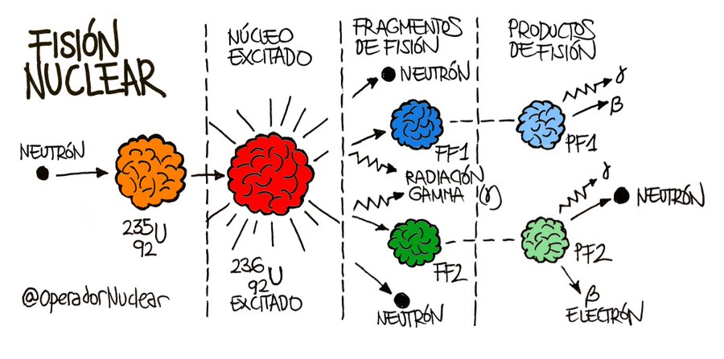
\(^{235}\)U + n → \(^{236}\)U* → dos fragmentos de fisión + neutrones + \(\gamma\) (infografía de @OperadorNuclear).
Barrera de fisión: ¿qué núcleos se rompen con un neutrón lento?
Núcleo compuesto:
Energía de separación del neutrón \(S_n\):
Barrera de fisión \(E_f\) (aprox.):
Energía de excitación \(E^* = S_n + E_n\):
Umbral de energía del neutrón:
Parámetro de fisionabilidad \(Z^2/A\):
La energía de separación se calcula con masas atómicas medidas. Las barreras son valores aproximados de la literatura, con una incertidumbre de ± 0,5 MeV, y se usan para ilustrar la idea; los umbrales reales de las secciones eficaces son más precisos. Dibujo esquemático: la forma del núcleo a lo largo de la deformación (esfera → cuello → dos fragmentos).
Físil
Se fisiona con neutrones de cualquier energía, incluso térmicos: \(^{233}\)U, \(^{235}\)U, \(^{239}\)Pu. Tienen un número impar de neutrones: al absorber uno, ese neutrón se aparea con otro y libera energía extra de apareamiento (≈ 1–2 MeV).
Fisionable
Se fisiona sólo con neutrones rápidos (> 1 MeV): \(^{238}\)U, \(^{232}\)Th. Tienen número par de neutrones: el neutrón nuevo queda desapareado y trae menos energía de excitación que la barrera.
Fértil
No fisiona con neutrones lentos, pero al capturar uno produce un núcleo físil: \(^{238}\)U + n → \(^{239}\)U → \(^{239}\)Np → \(^{239}\)Pu (dos desintegraciones \(\beta^-\)). Así un reactor «fabrica» plutonio mientras funciona.
17. La energía de la fisión
La masa de los fragmentos y los neutrones es menor que la del uranio original: la diferencia se convierte en energía
Como en la fusión, el balance se hace con masas: la suma de las masas de los fragmentos y de los neutrones liberados es menor que la del núcleo de uranio original. Esa cantidad diminuta de masa faltante, alrededor del 0,08 % de la masa original, se convierte en energía según Einstein:
\[ E = mc^2 \qquad\qquad \Delta E = \Delta m\,c^2 \]
Tabla de la diapositiva original. Cuando \(m\) se expresa en u, \(c^2\) equivale a 931 MeV.
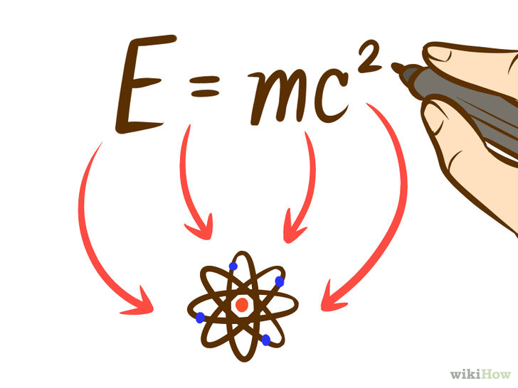
\(E = mc^2\): la masa que falta es la energía liberada.
Fisión vs. fusión
Por nucleón, la fusión libera más (D–T: 3,5 MeV frente a 0,74 MeV). Por reacción, la fisión libera diez veces más (≈ 200 MeV frente a 17,6 MeV), porque un núcleo de uranio tiene 236 nucleones que se reacomodan. Por kilogramo de combustible, la fusión gana: 3,4 × 10¹⁴ J/kg frente a 8 × 10¹³ J/kg.
¿Dónde queda la energía? (por fisión de \(^{235}\)U)
Total liberado:
Energía útil en un reactor (sin neutrinos):
Una fisión: ; 10¹⁸ fisiones por segundo =
Valores típicos aproximados. Casi toda la energía (≈ 83 %) es energía cinética de los fragmentos: los dos núcleos salen disparados a ≈ 1,4 × 10⁷ m/s por repulsión de Coulomb y la reparten con el combustible en forma de calor. Los neutrinos se escapan sin dejar su energía.
¿En qué se parte el uranio? Rendimiento de los fragmentos
Fragmento pesado (con 3 n):
Rendimiento ligero:
Energía cinética ligero:
Energía cinética pesado:
Curva cualitativa: dos picos (\(A \approx 95\) y \(A \approx 139\)) y un valle en la fisión simétrica. La fisión pocas veces parte el núcleo en dos mitades iguales. Se conserva el momento: el fragmento ligero se lleva más energía cinética.
18. Bombardeo de núcleos con neutrones: Hahn y Meitner
Un descubrimiento que se hizo con química y se entendió con física
En la década de 1930 se bombardeaban elementos con neutrones para crear elementos nuevos. En diciembre de 1938, Otto Hahn y Fritz Strassmann irradiaron uranio con neutrones y encontraron, con un análisis químico, bario, un elemento con casi la mitad de masa. Hahn no podía explicarlo y escribió a Lise Meitner, su antigua colaboradora, exiliada en Suecia desde julio de ese año por ser de familia judía.
Meitner y su sobrino Otto Frisch interpretaron el resultado: el núcleo de uranio se había partido en dos, como una gota líquida. Calcularon con el defecto de masa que se liberaban unos 200 MeV por núcleo, y Frisch llamó al proceso fisión, por analogía con la división celular de la biología (enero–febrero de 1939).
El núcleo de uranio se convierte en diversos fragmentos más dos o tres neutrones. La suma de las masas es menor que la masa original: esa «falta» (≈ 0,1 % de la masa) se ha convertido en energía según \(E = mc^2\).
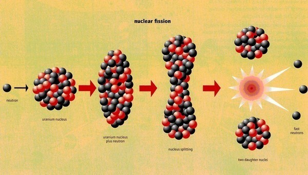
Neutrón → núcleo deformado → cuello → dos núcleos hijos y neutrones.
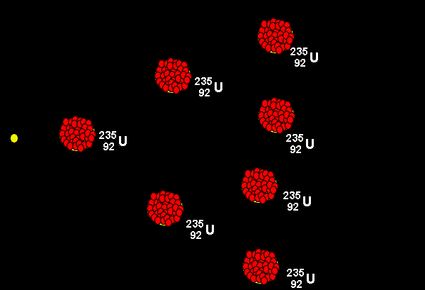
Animación de la diapositiva original.
De un experimento a una industria en 16 años
1932
Chadwick Descubre el neutrón
1934
Fermi Irradia uranio con neutrones; sin saberlo, ya lo estaba fisionando
1938
Hahn y Strassmann Detectan bario tras irradiar uranio
1939
Meitner y Frisch Explican y nombran la fisión
1942
Fermi, Chicago Pile-1 Primera reacción en cadena autosostenida y controlada (2 de diciembre)
1954
Obninsk (URSS) Primera central eléctrica conectada a una red
Sugerida: fotografía de Meitner y Hahn (dominio público en Wikimedia Commons).
Sugerida: Chicago Pile-1 (1942).
Un reconocimiento que no llegó
El Premio Nobel de Química de 1944 se otorgó sólo a Hahn «por el descubrimiento de la fisión de núcleos pesados». Meitner, que aportó la interpretación física, no fue incluida; hoy es una de las omisiones más discutidas en la historia del Nobel. En 1997 el elemento 109 recibió su nombre: meitnerio.
19. Reacción en cadena
Un proceso que se alimenta a sí mismo: cada fisión libera los neutrones que provocan las siguientes
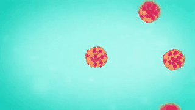
Animación de la diapositiva original.
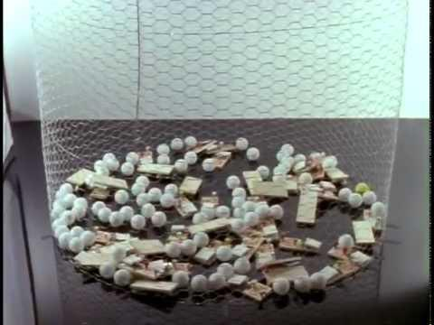
La analogía clásica: cada trampa que salta lanza pelotas que disparan otras.
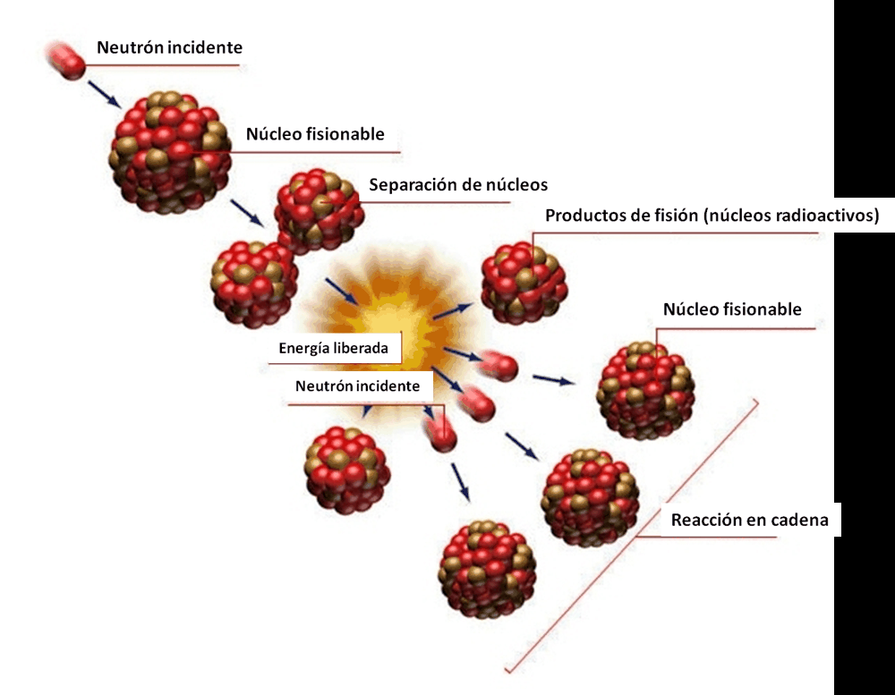
Neutrón incidente → fisión → neutrones nuevos → más fisiones.
Cada fisión del \(^{235}\)U libera en promedio \(\bar\nu = 2{,}43\) neutrones, pero no todos producen otra fisión: unos se escapan del material, otros los captura el uranio-238 o las impurezas sin que haya fisión, otros se absorben en el moderador o la estructura. Lo que importa es el factor de multiplicación \(k\): cuántos neutrones de la siguiente generación sobreviven y fisionan por cada neutrón de la generación actual.
\(k < 1\): subcrítico
La reacción se apaga. Cada generación es más pequeña que la anterior.
\(k = 1\): crítico
Se sostiene. Cada generación tiene el mismo número de neutrones: es el régimen de un reactor.
\(k > 1\): supercrítico
Crece exponencialmente. En un reactor se hace con \(k\) apenas mayor que 1; en un arma, con \(k\) mucho mayor.
Generaciones de neutrones
Reactividad \(\rho = (k-1)/k\):
Fracción de neutrones retardados \(\beta\): 0,65 % (\(^{235}\)U)
Tiempo en duplicar la población:
Tiempo en multiplicarla por un millón:
Cada línea gris es una simulación de Monte Carlo: cada neutrón causa fisión con probabilidad \(k/2{,}43\) y entonces produce 2 o 3 neutrones nuevos (43 % de 3). Línea oscura: promedio \(n_0 k^g\). Con \(k = 1\) y pocos neutrones, el azar puede apagar la cadena. Con \(k\) cerca de 1 y \(n_0\) alto, el azar casi desaparece. Los neutrones retardados (0,65 % de los de fisión, emitidos segundos después por fragmentos radiactivos) alargan el tiempo efectivo por generación hasta ≈ 0,1 s: por eso un reactor se puede controlar a mano. Si \(\rho > \beta\) la cadena es supercrítica con sólo neutrones inmediatos, y ese colchón desaparece.
Por qué la cadena crece tan rápido
En la demostración de las trampas hay mucha más «energía» almacenada que la necesaria para disparar la primera, pero una sola pelota lanzada a una malla de trampas cercanas termina con todas disparadas en un par de segundos. La cadena crece de forma exponencial porque cada evento prepara el siguiente. Lo mismo ocurre en un material físil: el tiempo entre generaciones es tan breve (10⁻⁸ s) que 80 generaciones (≈ 10²⁴ fisiones) caben en menos de una millonésima de segundo.
20. Masa crítica
La cantidad justa de material para que cada fisión produzca, en promedio, una fisión más
La masa crítica es la cantidad de masa con la cual cada evento de fisión produce, en promedio, un evento de fisión más. Es sólo la suficiente para «mantenerse». Una masa subcrítica es aquella con la que la reacción en cadena cesa; una masa supercrítica, aquella en la que la reacción en cadena aumenta (en un arma, en forma explosiva).
¿Por qué existe una masa mínima? Los neutrones se producen en todo el volumen (\(\propto R^3\)), pero se escapan por la superficie (\(\propto R^2\)). Un trozo pequeño pierde casi todos sus neutrones; al crecer, la fracción que escapa disminuye como \(1/R\). Cuando la producción iguala las pérdidas, el sistema es crítico.
Teoría de difusión para una esfera desnuda: \(k_\infty\) es el factor de multiplicación de un medio infinito y \(L\) la longitud de difusión de los neutrones.
Material (esfera desnuda)
Masa crítica
Diámetro
Uranio-233
≈ 15 kg
≈ 11 cm
Uranio-235
≈ 52 kg
≈ 17 cm
Plutonio-239
≈ 10 kg
≈ 10 cm
Valores aproximados de la literatura. Un reflector de neutrones (berilio, acero, agua) y la compresión reducen mucho la masa necesaria; un moderador, como el agua, la puede reducir a menos de un kilogramo de \(^{235}\)U en una solución.
No es sólo una masa
La criticidad depende de la geometría (una esfera es la forma que menos neutrones pierde), de la pureza, de la densidad, de si hay reflector y de si hay moderador. Por eso en las plantas de combustible el uranio se almacena en recipientes largos y delgados y no en tanques anchos: la criticidad se controla con la forma.
Esfera crítica: calibrada con las masas críticas conocidas
Radio de la esfera:
Radio crítico \(R_c\):
Masa crítica \(M_c\):
Factor de multiplicación \(k_{\text{ef}}\):
Modelo de juguete: \(k_\infty\) y \(L\) se ajustaron para reproducir las masas críticas de esfera desnuda de la tabla. La compresión \(x\) aumenta la densidad: los recorridos libres se acortan (\(L \to L/x\)), el radio crítico cae como \(1/x\) y la masa crítica como \(1/x^2\). El reflector se modela como un «ahorro» de radio \(\delta\) (\(R_{\text{ef}} = R + \delta\)). Es sólo una ilustración de las escalas: no debe usarse para cálculos de criticidad reales.
Por qué la implosión funciona (en principio)
La masa crítica disminuye con el cuadrado de la densidad: comprimir el material al doble de densidad la reduce a una cuarta parte. Basta con deslizar el control de compresión del simulador para verlo. En un reactor, en cambio, la criticidad se logra con combustible poco enriquecido y un moderador, y no tiene ninguna relación con comprimir.
En un reactor: crítico, no supercrítico
Un reactor en operación estable está exactamente crítico (\(k = 1\)). Para subir de potencia se hace \(k\) un poco mayor que 1 durante un lapso breve y se regresa a 1; para apagarlo, se hace subcrítico con las barras de control. Los neutrones retardados dan el tiempo necesario para hacerlo de manera controlada.
21. Aplicaciones: reactores nucleares de fisión
Una caldera muy especial: calienta agua con fisiones en lugar de llamas
Un reactor nuclear de fisión es una instalación capaz de iniciar, mantener y controlar las reacciones de fisión en cadena, disponiendo de los medios adecuados para extraer el calor generado. Después, la central es una planta térmica como cualquier otra: ese calor hierve agua y el vapor mueve una turbina.
El principal uso actual de la energía nuclear es la generación de energía eléctrica. Según el sistema de información de reactores del OIEA (PRIS) hay unos 415–440 reactores en operación (el número cambia según el criterio de conteo) en una treintena de países; aportan alrededor del 9 % de la electricidad mundial y hay unos 60 en construcción. Francia genera cerca de dos tercios de su electricidad con ellos.
Cómo funciona
Resumen en un renglón: fisión → calor → vapor → turbina → generador → electricidad. Lo único que cambia respecto de una central de carbón o de gas es la primera flecha.
El interior de una central nuclear (Foro Nuclear).
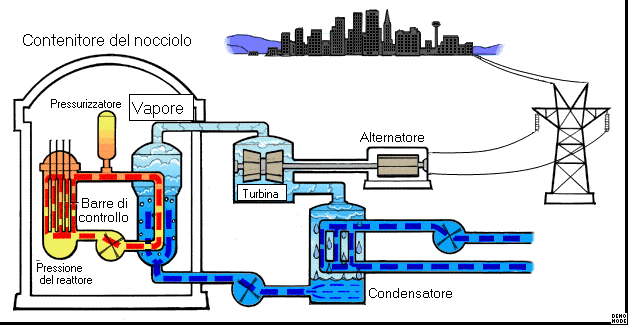
Esquema simplificado de una central de agua a presión (rótulos en italiano).
De una pastilla al núcleo del reactor
Pastilla
Cilindro de dióxido de uranio (UO₂) de ≈ 1 cm y unos 7 g, cerámico, que funde a unos 2 850 °C.
Varilla
≈ 300 pastillas apiladas en un tubo de aleación de circonio de ≈ 4 m, sellado. Es la primera barrera contra los productos de fisión.
Ensamble
≈ 264 varillas en una matriz de 17 × 17 con tubos guía para las barras de control.
Núcleo
≈ 190 ensambles en un reactor de agua a presión de 1 000 MWe: más de 50 000 varillas, unos 14 millones de pastillas.
¿Cuánta energía sale de una pastilla?
Energía térmica:
Equivale a de carbón
Electricidad:
Un hogar de ese consumo la gastaría en
Quemado: 1 GWd/t = 10⁹ W × 86 400 s por cada 10⁶ g de uranio = 86,4 GJ/kg. Una pastilla típica rinde unos 25 GJ térmicos, casi lo de una tonelada de carbón (24 GJ/t). Es la razón por la que una central usa decenas de toneladas de combustible al año, y no millones de toneladas.
22. Del calor a la electricidad
La fisión sólo es la fuente de calor; la conversión es termodinámica, igual que en cualquier central térmica
Debido a la fisión del uranio que se lleva a cabo en el reactor, se libera una gran cantidad de energía que calienta el agua hasta evaporarla. Este vapor se transporta al conjunto turbina–generador; allí las aspas de la turbina giran por la acción del vapor y mueven el generador, que transforma la energía mecánica en electricidad.
Al salir de la turbina, el vapor se dirige a un condensador, donde está en contacto térmico con tuberías de agua fría. El vapor se vuelve líquido y una bomba lo envía nuevamente al reactor para repetir el ciclo.
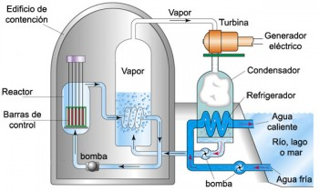
Ciclo vapor–turbina–condensador de una central nuclear.
Recorrido de la energía (agua a presión)
Temperatura caliente (vapor): ≈ 285 °C
Temperatura fría (condensador): ≈ 30 °C
Límite de Carnot:
Eficiencia real típica: ≈ 33 %
El segundo principio de la termodinámica obliga a descartar calor: no importa si el calor viene del carbón, del gas o de la fisión. Por eso las centrales térmicas necesitan un río, el mar o una torre de enfriamiento. El vapor de una central nuclear es menos caliente que el de una de carbón, de modo que su eficiencia es algo menor.
Balance de una central: nuclear, carbón o gas
Electricidad
Calor al ambiente
Potencia térmica:
Combustible por día:
Combustible por año:
Fisiones por segundo:
CO₂ directo por día:
Electricidad por año:
Cálculo directo con \(P_{th} = P_e/\eta\). Uranio: 200 MeV por fisión; el combustible fresco depende del quemado (45 GWd/t de metal pesado). Carbón y gas: sólo CO₂ de la combustión (94,6 y 56,1 kg CO₂/GJ, factores por defecto del IPCC); no incluye minería, transporte ni metano. El uranio emite cero CO₂ en la central, pero su ciclo completo (minería, enriquecimiento, construcción) no es cero.
23. Los elementos esenciales de un reactor
Cinco funciones, cada una con un material elegido por su física nuclear
Combustible
Material fisionable, generalmente compuesto de uranio, donde tienen lugar las fisiones. Es la fuente de calor. En los reactores de agua ligera se usa uranio enriquecido al 3–5 % en \(^{235}\)U (el natural tiene 0,72 %).
Moderador
Frena los neutrones rápidos nacidos de la fisión (≈ 2 MeV) hasta energías térmicas (0,025 eV), donde el \(^{235}\)U los captura con una probabilidad unas 500 veces mayor. Se usa agua, agua pesada, grafito, helio o sodio metálico.
Elementos de control
Permiten controlar en todo momento la población de neutrones y mantener estable el reactor. Son barras de materiales que absorben neutrones (boro, cadmio, hafnio) y, en agua a presión, ácido bórico disuelto.
Refrigerante
Extrae el calor generado por el combustible. Se usan líquidos como el agua ligera y el agua pesada o gases como el dióxido de carbono y el helio (y metales líquidos como el sodio en reactores rápidos).
Blindaje
Evita que las radiaciones y los neutrones del reactor se escapen al exterior. Se acostumbra usar hormigón, acero o plomo. El edificio de contención es la última barrera.
Defensa en profundidad
Cuatro barreras sucesivas: pastilla cerámica, vaina de circonio, circuito primario de acero y edificio de contención de hormigón. Para que algo salga, debe pasar por las cuatro.
Tipos de reactor según moderador y refrigerante
Tipo
Moderador
Refrigerante
Combustible
Observación
PWR (agua a presión)
agua ligera
agua ligera a ≈ 155 bar (no hierve)
UO₂ al 3–5 %
El más común del mundo; dos circuitos separados
BWR (agua en ebullición)
agua ligera
agua ligera que hierve en el núcleo
UO₂ al 3–5 %
Un solo circuito; Fukushima Daiichi
CANDU (PHWR)
agua pesada
agua pesada
uranio natural
No necesita enriquecer; recarga en operación
RBMK
grafito
agua ligera
UO₂ al 2 %
Diseño soviético; Chernóbil; coeficiente de vacío positivo
HTGR
grafito
helio
partículas TRISO
Alta temperatura (700–950 °C); seguridad pasiva
Rápido
ninguno
sodio líquido o plomo
plutonio / uranio
Puede «quemar» actínidos y criar combustible
Sugerida: pastilla, varilla y ensamble de combustible.
Un neutrón lento es mucho más eficaz que uno rápido para fisionar uranio-235
Su función es reducir la velocidad de los neutrones de la reacción de fisión. Durante la reacción, los neutrones chocan con los átomos del material físil (uranio) y provocan su fisión. La velocidad de los neutrones se reduce a través del moderador, que consiste de átomos de hidrógeno, deuterio o carbono: cada vez que el neutrón choca con uno de ellos le transfiere parte de su energía cinética. En ese punto es más probable que el neutrón produzca fisiones, o que sea absorbido por las barras de control.
Los materiales adecuados para el moderador son los que poseen una masa atómica baja, para maximizar la energía transferida en cada choque: es como una bola de billar que choca con otra igual (puede perder toda su energía en un choque) o con una bola de boliche (rebota sin perder casi nada).
Una aclaración de vocabulario
La diapositiva original llama a esto «barras moderadoras», pero el moderador es un medio (agua, agua pesada, grafito) que rodea el combustible, no una barra. Las barras de control, en cambio, absorben neutrones (boro, cadmio). El esquema las muestra a ambas: el moderador (celeste) entre las varillas de combustible y la barra de control abajo.
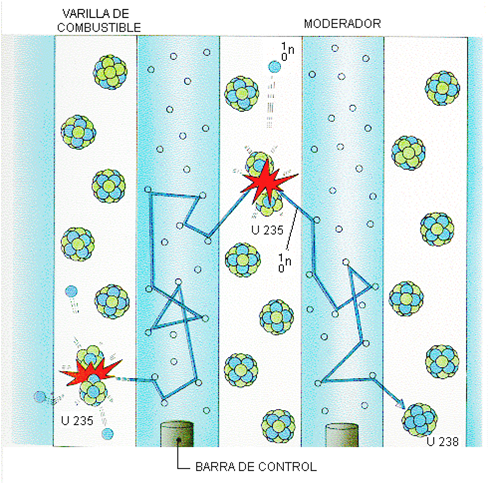
Los neutrones rebotan en el moderador hasta llegar lentos a un núcleo de \(^{235}\)U. Los materiales ligeros funcionan mejor.
Neutrones frenándose, choque a choque
Fracción de masa \(\alpha = ((A-1)/(A+1))^2\):
Pérdida logarítmica media \(\xi\):
Choques para pasar de 2 MeV a 0,025 eV:
Promedio en la simulación (2 000 neutrones):
En cada choque elástico, un neutrón de energía \(E\) queda con una energía \(E'\) repartida uniformemente entre \(\alpha E\) y \(E\) (dispersión isótropa en el centro de masa). El logaritmo de la energía baja en promedio \(\xi\) por choque, de modo que \(N = \ln(E_0/E_f)/\xi\). La línea punteada es la predicción. Se ignora la captura y el movimiento térmico de los núcleos. El promedio simulado supera a la predicción en ≈ 1 choque porque se cuenta el choque que cruza el umbral térmico.
Un buen moderador frena mucho y no absorbe
Moderador
\(\xi\)
Choques (2 MeV → 0,025 eV)
Razón de moderación \(\xi\Sigma_s/\Sigma_a\)
Comentario
Agua ligera (H₂O)
0,92
≈ 20
≈ 70
Frena muy bien pero absorbe neutrones: exige uranio enriquecido
Agua pesada (D₂O)
0,51
≈ 36
≈ 5 700
Casi no absorbe: permite usar uranio natural (CANDU)
Grafito (C)
0,16
≈ 115
≈ 190
Frena poco por choque, pero absorbe muy poco
Berilio (Be)
0,21
≈ 87
≈ 140
Buen moderador y reflector, pero caro y tóxico
Valores de manuales de ingeniería nuclear (p. ej., Lamarsh). El hidrógeno ordinario frena muy bien, pero es el único moderador que se «come» neutrones por captura (\(n + p \to d + \gamma\)); por eso el agua ligera exige enriquecer el uranio.
25. Control: manejar un reactor con neutrones retardados
Si sólo contaran los neutrones inmediatos, la potencia cambiaría 1 000 veces más rápido de lo que alcanzan a reaccionar las manos
Casi todos los neutrones de la fisión (99,35 %) se emiten en menos de \(10^{-14}\) s. Pero el 0,65 % (neutrones retardados) nace de la desintegración de ciertos productos de fisión, segundos o minutos después. Ese pequeño porcentaje fija la escala de tiempo del reactor: cuando \(k\) es apenas mayor que 1, la potencia sube con un período de decenas de segundos, no de milisegundos.
Se mide la reactividad \(\rho = (k-1)/k\) en pcm (10⁻⁵) o en dólares: 1 $ = \(\beta\) = 650 pcm. Mientras la reactividad sea menor que 1 $ el reactor es controlable. Por encima de 1 $ la cadena se sostiene con sólo neutrones inmediatos (prompt critical) y la potencia sube en milisegundos: algo parecido ocurrió en Chernóbil.
\[ \frac{dn}{dt} = \frac{\rho - \beta}{\Lambda}\,n + \lambda C \qquad\quad \frac{dC}{dt} = \frac{\beta}{\Lambda}\,n - \lambda C \]
Cinética puntual con un grupo de neutrones retardados: \(n\) es la potencia relativa, \(C\) los precursores, \(\Lambda \approx 10^{-4}\) s el tiempo de generación y \(\lambda = 0{,}08\) s⁻¹.
Un auto con un retardo
Pisar el acelerador de un auto que responde con 0,1 ms de retraso sería imposible de manejar. Los neutrones retardados hacen que el reactor responda como un auto que tarda décimas de segundo: se puede controlar. Otra pieza clave son las realimentaciones negativas: si la potencia sube, el combustible se calienta, el ensanchamiento Doppler de las resonancias del \(^{238}\)U hace que absorba más neutrones y la reactividad baja sola.
Simulador de potencia de un reactor
Reactividad en dólares:
Período estable \(T = 1/\omega\):
Potencia a los 60 s:
Potencia máxima:
Se integra la cinética puntual (Runge–Kutta, 1 ms) durante 60 s con \(\beta = 0{,}0065\). Escala logarítmica de potencia relativa (1 = nominal). SCRAM: se inserta −5 000 pcm: la potencia cae de inmediato un factor \(\approx 9\) (fin de los neutrones inmediatos) y luego decae con el período de los retardados (14 s en este modelo de un solo grupo; con los seis grupos reales, el más largo llega a ≈ 80 s). Con realimentación, la potencia se estabiliza donde la reactividad total se hace cero (coeficiente supuesto: 50 pcm por unidad de potencia relativa). El modelo no incluye calor residual ni xenón, y para \(\rho > \beta\) el modelo sólo diverge (en la realidad el sistema se destruiría antes).
ρ < 0
Subcrítico: la potencia cae y se estabiliza en un nivel bajo (decaimiento de los retardados). Las barras de control están entrando.
0 < ρ < β
Supercrítico controlable: la potencia crece exponencialmente, con período de decenas de segundos. Hay tiempo para actuar o para que la realimentación frene el aumento.
ρ > β
Crítico inmediato: la potencia sube por neutrones inmediatos, con un período de milisegundos. Los diseños modernos evitan que esto pueda ocurrir.
26. ¿Puede un reactor explotar como una bomba atómica?
No. Pero eso no significa que no pueda ocurrir un accidente grave
El combustible nuclear de un reactor nunca puede causar una explosión nuclear como la de una bomba atómica. Construir una bomba nuclear es realmente muy difícil. Los reactores sí pueden «explotar», pero con un efecto parecido al de la dinamita, no al de una bomba. La explosión de un reactor es peor que la de la dinamita debido a los residuos radiactivos que libera, no por el estallido en sí. La devastación posterior se asimila, equivocadamente, a la de una bomba nuclear.
Enriquecimiento: el combustible tiene 3–5 % de \(^{235}\)U; una bomba requiere más de 90 %. Con tan poco \(^{235}\)U, el \(^{238}\)U absorbe demasiados neutrones rápidos para que haya una cadena explosiva.
Geometría y tiempo: una explosión nuclear requiere reunir material supercrítico en microsegundos y mantenerlo unido. En un reactor, cualquier aumento brusco de potencia vaporiza el agua o funde el combustible y el sistema se desarma antes de que la cadena crezca.
Realimentación: lo vimos antes: el aumento de temperatura baja la reactividad.
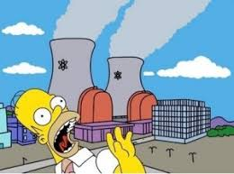
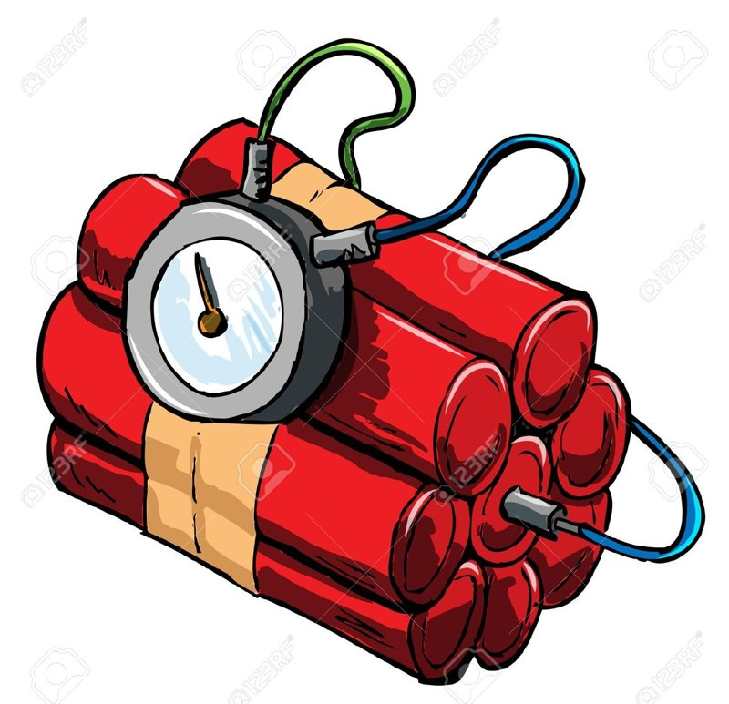
Imagen de la diapositiva original.
Enriquecimiento del uranio y sus usos
Tres accidentes que se estudian
Accidente
Qué falló
Escala INES
Three Mile Island (EE. UU., 1979)
Pérdida de refrigerante y fusión parcial del núcleo; la contención resistió y la liberación de radiactividad fue pequeña.
5
Chernóbil (URSS, 1986)
Reactor RBMK con coeficiente de vacío positivo y una prueba mal ejecutada: la potencia se disparó, una explosión de vapor destruyó el núcleo y el grafito ardió, sin edificio de contención.
7
Fukushima Daiichi (Japón, 2011)
Un tsunami dejó sin energía el enfriamiento de reactores BWR que se habían apagado automáticamente; el calor residual fundió el combustible y el hidrógeno acumulado explotó.
7
En los tres casos el problema decisivo fue retirar el calor y contener el material, no una explosión nuclear. La siguiente diapositiva calcula cuánto calor queda aun con el reactor apagado.
27. Calor residual, residuos y riesgo
Apagar la reacción en cadena no apaga el calor: los productos de fisión siguen desintegrándose
Al insertar las barras de control la fisión cesa en segundos, pero los productos de fisión son radiactivos y su desintegración sigue calentando el combustible. Esa potencia residual es ≈ 6–7 % de la potencia nominal en el primer instante y decae despacio. Sin refrigeración, el agua se evapora, las varillas se descubren y el combustible se funde: es la secuencia de Three Mile Island y Fukushima.
Fórmula empírica de Way–Wigner: \(t\) es el tiempo (s) desde el apagado y \(T\) el tiempo (s) que el reactor funcionó antes. Es una aproximación de orden de magnitud, no una norma de diseño.
Calor residual tras el apagado
Potencia residual:
Equivale a:
Si se pierde el enfriamiento, evaporaría: de agua
Ejemplo: tras 1 hora, 1 % de 3 000 MW son 30 MW, el equivalente a unas 40 000 estufas eléctricas. Se supone que el reactor operó un año completo; con calor latente de 2 MJ/kg.
Residuos: qué queda y por cuánto tiempo
Combustible gastado
Tras 3–4 años en el reactor, el combustible contiene aproximadamente 95 % de uranio, 1 % de plutonio y 4 % de productos de fisión y otros actínidos. Un reactor de 1 GWe genera unas 20–25 toneladas de combustible gastado al año, que se almacena en piscinas y luego en contenedores secos.
Dos escalas de tiempo
Los productos de fisión (\(^{90}\)Sr, \(^{137}\)Cs) tienen vidas medias de ≈ 30 años: en unos siglos ya no son preocupantes. Los actínidos (\(^{239}\)Pu, 24 100 años) y algunos productos como el \(^{99}\)Tc (211 000 años) mantienen la radiotoxicidad del combustible gastado muy por encima de la del mineral original durante decenas a cientos de miles de años, y eso obliga a pensar en repositorios geológicos profundos o a reciclar el combustible.
Muertes por TWh de electricidad producida
Escala logarítmica. Datos de Our World in Data (fósiles: Markandya y Wilkinson, 2007; solar y eólica: Sovacool et al., 2016). Para la nuclear se incluyen Chernóbil y Fukushima, con un modelo lineal sin umbral, que da un valor superior. Incluyen accidentes y contaminación del aire. El carbón mundial se estima más alto (≈ 93–224) por la contaminación en países con menos controles. Son estimaciones con incertidumbre: sirven para comparar órdenes de magnitud.
28. Ver un reactor por dentro (y el que tenemos en Colombia)
Dos videos de la diapositiva original y una visita posible
Colombia no tiene centrales nucleares, pero sí un reactor nuclear de investigación: el IAN-R1, que opera el Servicio Geológico Colombiano en Bogotá y que entró en servicio en 1965 con el programa «Átomos para la Paz». Opera a 30 kW térmicos, unas 100 000 veces menos que una central de 3 GWt: no produce electricidad, sino neutrones (flujo del orden de \(10^{11}\) cm⁻²·s⁻¹) para estudiar muestras.
Análisis por activación neutrónica: se irradia una muestra y se mide la radiación gamma de los isótopos que se forman; revela elementos en trazas.
Geocronología: fechado de minerales por trazas de fisión, igual que lo que vimos con otros relojes isotópicos.
Aplicaciones radiactivas y docencia: investigación y formación en tecnologías nucleares con fines pacíficos.
El Servicio Geológico Colombiano recibe visitas de colegios, universidades y grupos de investigación mediante agendamiento previo.
Escalas de potencia
Potencia térmica, en escala logarítmica. Una central grande produce unos 3 GW de calor para obtener 1 GW eléctrico.
Sugerida: foto del IAN-R1 (material del SGC; revisa su licencia).
29. Medicina nuclear: tomografía por emisión de positrones
Ver el metabolismo de un órgano sin abrir al paciente
La tomografía por emisión de positrones (PET) es una técnica no invasiva de diagnóstico e investigación in vivo por imagen, capaz de medir la actividad metabólica del cuerpo humano. Se basa en detectar y analizar la distribución tridimensional que adopta dentro del cuerpo un radiofármaco de vida media ultracorta, administrado por una inyección intravenosa.
Existen sustancias radiactivas que emiten positrones, como el magnesio-23 de la diapositiva original o, en la práctica, el flúor-18:
Cuando se libera un positrón, lo más probable es que encuentre rápidamente un electrón del tejido y se aniquilen, formando un par de fotones gamma de 511 keV (la energía en reposo del electrón: \(m_e c^2\)) que salen en direcciones opuestas.
El radiofármaco más usado: ¹⁸F-FDG
La fluorodesoxiglucosa es una glucosa con un átomo de flúor-18. Las células la captan como a la glucosa pero no pueden consumirla: se queda atrapada. Los tejidos más activos (tumores, cerebro, corazón) acumulan más y brillan más en la imagen: los tejidos afectados absorben más rápidamente la sustancia radiactiva que los sanos.
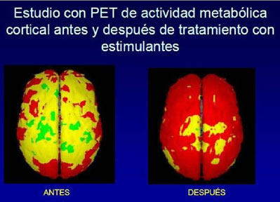
PET de la actividad metabólica cortical antes y después de un tratamiento.
El reloj del radiofármaco: ¿hasta dónde puede viajar?
Vida media:
Actividad restante: ()
Tiempo para quedar en 10 %:
\(A(t) = A_0\,2^{-t/T_{1/2}}\), con \(1\) MBq = \(10^6\) desintegraciones por segundo. El ¹⁸F (110 min) se produce en un ciclotrón y se envía por carretera a hospitales a unas horas de distancia; el ¹⁵O (2 min) y el ⁸²Rb (75 s) exigen producirse o generarse en el mismo sitio. Una vida media corta es una virtud: limita la dosis que recibe el paciente.
30. PET: detección en coincidencia y reconstrucción de la imagen
Cada par de fotones define una línea; muchas líneas cruzándose dibujan el órgano
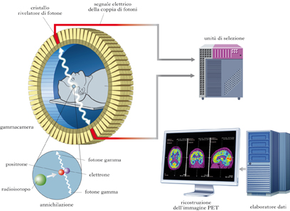
Los detectores forman un anillo alrededor del paciente (rótulos en italiano).
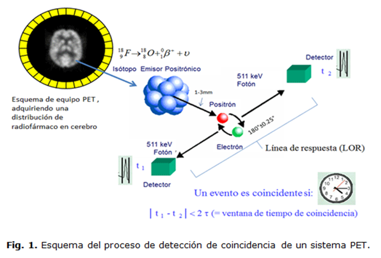
Un evento es coincidente si \(|t_1 - t_2| < 2\tau\) (ventana de coincidencia).
Los tomógrafos detectan los fotones gamma emitidos por el paciente. Son el producto de una aniquilación entre un positrón, emitido por el radiofármaco, y un electrón del tejido.
Los fotones deben detectarse en coincidencia en una ventana de tiempo adecuada (nanosegundos) y deben provenir de la misma dirección y en sentidos opuestos.
Los detectores están dispuestos en anillo alrededor del paciente. Los fotones detectados se convierten en señales eléctricas; luego se filtra la información y se reconstruye la imagen.
Reconstrucción de una imagen PET
Distribución real del radiofármaco (con el anillo de detectores)
Imagen reconstruida
Eventos acumulados:
Fluctuación relativa por píxel \(\sim 1/\sqrt{N}\):
Se simulan emisiones al azar según la distribución de la izquierda; cada una produce una línea de respuesta en dirección aleatoria. La imagen de la derecha es la retroproyección: se suma cada línea. Con pocos eventos la imagen es ruido; con muchos, aparecen las zonas calientes. La retroproyección simple da imágenes borrosas con estrellas; el realce de bordes mejora parte de ese desenfoque. Los tomógrafos reales usan además reconstrucción iterativa y corrección por atenuación, dispersión y coincidencias accidentales.
Coincidencias accidentales
Coincidencias accidentales por par de detectores:
Comparadas con las coincidencias verdaderas de ese par:
Dos fotones de aniquilaciones distintas pueden caer, por azar, dentro de la ventana: \(R = 2\tau\,S_1 S_2\). Crece con el cuadrado de la actividad y con el ancho de la ventana. Por eso los tomógrafos modernos tienen detectores muy rápidos (ventanas de pocos nanosegundos) y se limita la actividad inyectada. Valores de ejemplo, de orden de magnitud: la tasa se expresa en miles de fotones por segundo (kcps) y se supone que el 0,1 % de los fotones de un detector tiene su pareja en el detector de este par.
31. El tomógrafo y la dosis de radiación
Toda imagen médica con radiación tiene un costo: la pregunta es cuánto y si vale la pena
Sala de control de un equipo PET/TC.
Los detectores están dispuestos en anillo alrededor del paciente. Para obtener la imagen, los fotones detectados se convierten en señales eléctricas; luego se filtra la información y se reconstruye la imagen.
La unidad de dosis efectiva es el sievert (Sv): 1 Sv = 1 J de radiación ionizante absorbida por kilogramo, ponderada por el tipo de radiación y de tejido. Se habla casi siempre en milisievert (mSv). La radiación natural de fondo (radón, rayos cósmicos, potasio-40 del cuerpo) aporta unos 2,4 mSv/año de promedio mundial.
Cómo leer una dosis
A dosis altas (> 1 000 mSv, de golpe) los efectos son claros: enfermedad aguda por radiación. A dosis bajas el riesgo es muy pequeño y no se puede medir directamente: las normas de protección usan el modelo lineal sin umbral (≈ 5 casos de cáncer por cada 100 000 personas por cada mSv), una extrapolación prudente y discutida. Un examen se justifica cuando el beneficio diagnóstico es mayor que ese riesgo.
Escala de dosis efectivas
Dosis:
Equivale a de radiación natural de fondo
Fracción del límite ocupacional anual (20 mSv):
Riesgo adicional estimado (LNT):
Valores típicos (varían con el equipo, el paciente y el protocolo). PET con ¹⁸F-FDG: unos 370 MBq × 0,019 mSv/MBq ≈ 7 mSv, y el PET/TC suma la TC. Banana: la dosis por comer una, debida al potasio-40 (≈ 0,1 µSv). Escala logarítmica: cada marca es 10 veces mayor. El riesgo se calcula con el coeficiente nominal de la ICRP (5,5 % por Sv) y sólo es una estimación estadística para poblaciones.
Tiempo
Menos tiempo cerca de la fuente, menos dosis. Por eso se usan radionúclidos de vida media corta.
Distancia
La intensidad de la radiación de una fuente puntual disminuye como \(1/r^2\): duplicar la distancia la reduce a la cuarta parte.
Blindaje
Material entre la fuente y el cuerpo: delantales de plomo, vidrio plomado, paredes de hormigón. Es la atenuación exponencial vista antes.
32. La fusión controlada: ITER y los experimentos de ignición
Imitar al Sol en la Tierra: combustible casi ilimitado, sin reacción en cadena y con residuos de vida corta
Combustible: el deuterio se obtiene del agua (1 átomo de H de cada ≈ 6 500 es deuterio); el tritio se «cría» dentro del reactor con litio: \(n + {}^{6}\text{Li} \to {}^{3}\text{H} + {}^{4}\text{He}\).
Sin cadena: el plasma es tan tenue que si algo falla se enfría y la reacción se detiene sola; no puede «escaparse» como una fisión.
Residuos: no hay productos de fisión; sólo estructuras activadas por neutrones, que decaen en décadas o un siglo, no en milenios.
Dos caminos
Confinamiento magnético (tokamak, estelarador): un plasma de ≈ 150 millones de grados se mantiene lejos de las paredes con campos magnéticos. Confinamiento inercial (láseres): una cápsula de D–T de un milímetro se comprime con láseres hasta que se enciende en una fracción de nanosegundo.
Experimento
Resultado
JET (Reino Unido, tokamak)
1997: Q = 0,67 (16 MW de fusión con 24 MW de calentamiento). 2023: récord de 69 MJ en 5 s.
NIF (EE. UU., láseres)
5 dic. 2022: 3,15 MJ de fusión con 2,05 MJ de láser (primera ignición). 7 abr. 2025: 8,6 MJ con 2,08 MJ (ganancia 4,13, récord). Ignición lograda 11 veces hasta junio de 2026.
ITER (Francia, tokamak en construcción)
Objetivo: Q = 10, es decir, 500 MW de fusión con 50 MW de calentamiento. Nuevo calendario (2024): inicio de operaciones de investigación en 2034, plasma de deuterio con plena energía magnética en 2036 y deuterio–tritio en 2039, con unos 5 000 millones de euros adicionales.
Ojo con las comparaciones
La «ganancia» del NIF compara la energía de fusión con la energía que llegó a la cápsula (≈ 2 MJ), no con la que consumieron los láseres de la red eléctrica (≈ 300 MJ por disparo). Por eso se sigue lejos de una central de fusión: faltan ganancias de decenas y una frecuencia de disparo de varios por segundo.
El criterio de Lawson: la triple condición para la ignición
Triple producto \(nT\tau_E\)
Presión del plasma:
Comparado con la atmósfera:
Temperatura en kelvin:
Fracción del umbral de ignición:
Para D–T, en el intervalo de 10 a 20 keV, \(\langle\sigma v\rangle \propto T^2\) y la ignición exige \(n T \tau_E \gtrsim 3\times10^{21}\) keV·s·m⁻³: el balance de potencia (calentamiento por partículas \(\alpha\) ≥ pérdidas) sólo depende del producto. Escala logarítmica de 10²⁰ a 10²². Los mejores tokamaks de la década de 1990 llegaron a ≈ 1 × 10²¹; el Sol compensa un \(\tau_E\) minúsculo con una densidad inmensa. Idealización de una sola temperatura y densidad uniformes: los reactores reales tienen perfiles y pérdidas radiativas que elevan el requisito práctico. 1 keV ≈ 11,6 millones de kelvin.
Sugerida: corte del tokamak ITER (iter.org, galería de imágenes).
Sugerida: hohlraum y cápsula del NIF (LLNL).
Para pensar…
Intenta responder antes de abrir cada respuesta
1. ¿Por qué en general un núcleo más grande es menos estable que uno más pequeño?
La interacción fuerte tiene un alcance de ≈ 2–3 fm: cada nucleón sólo se une con sus vecinos más próximos, de modo que la energía de enlace crece \(\propto A\) (volumen), con un recorte por la superficie. La repulsión eléctrica, en cambio, actúa entre todos los pares de protones y crece como \(Z^2/A^{1/3}\). Al aumentar \(A\) la repulsión eléctrica gana terreno: \(B/A\) pasa por un máximo en el hierro y desciende, y por encima del plomo-208 (\(Z = 82\)) no hay núcleos realmente estables (el bismuto-209 decae con una vida media de 10¹⁹ años). Se necesitan además más neutrones por protón para compensar.
2. ¿En qué se parece un reactor nuclear a una planta de energía con combustible fósil? ¿En qué es distinto?
Se parece: ambas son plantas térmicas. Un combustible libera calor que hierve agua; el vapor mueve una turbina acoplada a un generador y se condensa en un circuito con agua fría. Por eso ambas descartan calor al ambiente (≈ 2/3 de la energía en una nuclear). Es distinto: el calor viene de fisiones y no de combustión; 1 kg de uranio equivale a ≈ 3 000 toneladas de carbón; no emite CO₂ en operación pero genera combustible gastado radiactivo y calor residual; requiere control de la reacción en cadena y un enfriamiento incluso apagado.
3. ¿Por qué un haz muy brillante de luz roja no cede más energía a un electrón expulsado de una superficie fotosensible que un débil haz de luz violeta?
Efecto fotoeléctrico: un electrón absorbe un fotón a la vez, y la energía de cada fotón es \(E = hf\). La luz violeta tiene mayor frecuencia, así que cada fotón lleva más energía; la energía cinética máxima del electrón es \(hf - \phi\), independiente de la intensidad. Un haz rojo brillante tiene muchos fotones, pero cada uno puede no alcanzar la función trabajo \(\phi\); más fotones sólo significan más electrones, no electrones más energéticos.
4. ¿Por qué unas cuantas partículas alfa disparadas a una hoja de oro rebotan hacia atrás?
Porque la carga positiva del átomo y casi toda su masa están concentradas en un núcleo diminuto (≈ 10⁻¹⁴ m, 10⁻⁴ del tamaño del átomo). Una alfa que pasa muy cerca del núcleo siente una repulsión de Coulomb enorme (\(\propto 1/r^2\)) y puede devolverse. En el modelo de Thomson, con la carga repartida, esa desviación sería imposible (≈ 1 de cada 8 000 rebotaba).
5. Cuando cae luz ultravioleta (UV) sobre ciertos colorantes se emite luz visible. ¿Por qué no sucede esto con luz infrarroja (IR)?
Es fluorescencia. Un fotón UV (de mayor energía) excita a la molécula, que pierde parte de la energía en vibraciones y emite un fotón de menor energía, visible. Un fotón IR tiene menos energía que un fotón visible y no basta para excitar al colorante a un estado desde el cual pueda emitir luz visible: no se puede crear un fotón de más energía a partir de uno de menos.
6. Un hueso fosilizado contiene el 40 % del carbono-14 que tendría un ser vivo. ¿Qué edad tiene? ¿Y si tuviera el 12,5 %?
\(t = -\tau\ln f\) con \(\tau = 5730/\ln 2 = 8267\) años. Con \(f = 0{,}40\): \(t = 8267 \times 0{,}916 \approx 7\,575\) años. Con \(f = 0{,}125 = (1/2)^3\) son exactamente 3 vidas medias: \(3 \times 5730 = 17\,190\) años.
7. Calcula la energía de enlace del deuterio (\(m_{^1\text{H}} = 1{,}007825\) u, \(m_n = 1{,}008665\) u, \(m_{^2\text{H}} = 2{,}014102\) u).
\(\Delta m = 1{,}007825 + 1{,}008665 - 2{,}014102 = 0{,}002388\) u, y \(B = 0{,}002388 \times 931{,}5 \approx 2{,}22\) MeV: es la energía del fotón gamma que se libera al capturar un neutrón en hidrógeno, y la mínima para separar el deuterio. Por nucleón, 1,11 MeV: el menos ligado de los núcleos estables.
8. ¿Cuánto combustible D–T haría falta para generar 1 GW eléctrico durante un año con una eficiencia del 40 %?
Energía eléctrica: \(10^9 \times 3{,}16\times10^7 = 3{,}16\times10^{16}\) J; térmica: \(/0{,}40 = 7{,}9\times10^{16}\) J. D–T libera \(3{,}4\times10^{14}\) J/kg, así que hacen falta ≈ 230 kg de mezcla (≈ 93 kg de deuterio y 140 kg de tritio). Una central de carbón de la misma potencia quemaría varios millones de toneladas.
9. ¿Cuántas fisiones por segundo ocurren en un reactor de 3 000 MW térmicos?
Cada fisión libera unos 200 MeV = \(3{,}2\times10^{-11}\) J. Entonces \(3\times10^9\ \text{W} / 3{,}2\times10^{-11}\ \text{J} \approx 9{,}4\times10^{19}\) fisiones por segundo, es decir, ≈ 3 kg de uranio-235 fisionado al día.
10. Si se comprime una esfera de plutonio al doble de su densidad, ¿cómo cambia su masa crítica?
El recorrido libre medio de los neutrones disminuye a la mitad, el radio crítico también, y la masa crítica \(M_c \propto \rho R_c^3 \propto 1/\rho^2\) se reduce a la cuarta parte. En un reactor no se comprime nada: la criticidad se logra con moderador y geometría.
Para profundizar
PhET: Fisión nuclear
Dispara neutrones a núcleos de uranio, controla una reacción en cadena y observa un reactor.
Con las herramientas de esta presentación puedes explorar: la energía de enlace (diapositivas 5 y 9), la barrera de Coulomb y el pico de Gamow (7), el mapa de núclidos (10), el simulador de decaimiento (15), la datación con carbono 14 (17), la barrera de fisión (18), la reacción en cadena y la masa crítica (21 y 22), el moderador (26), la cinética del reactor (27) y la reconstrucción de imágenes PET (32).